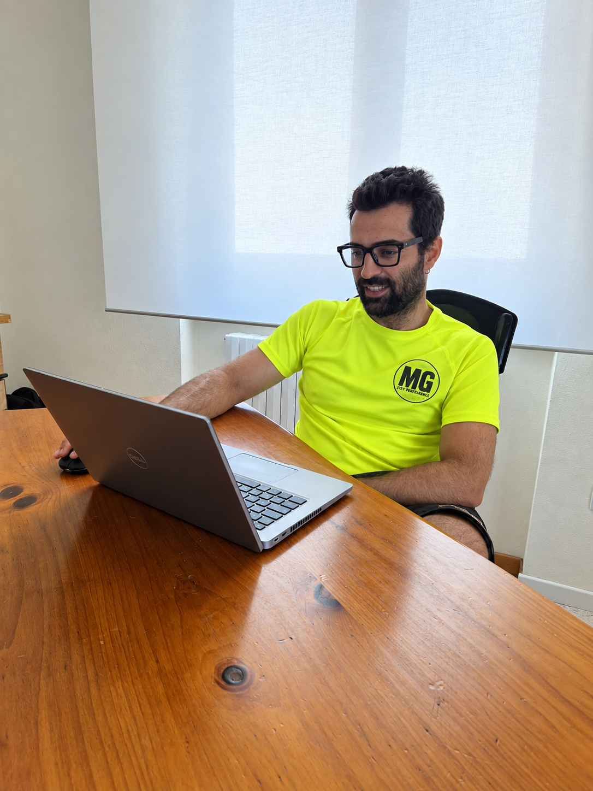
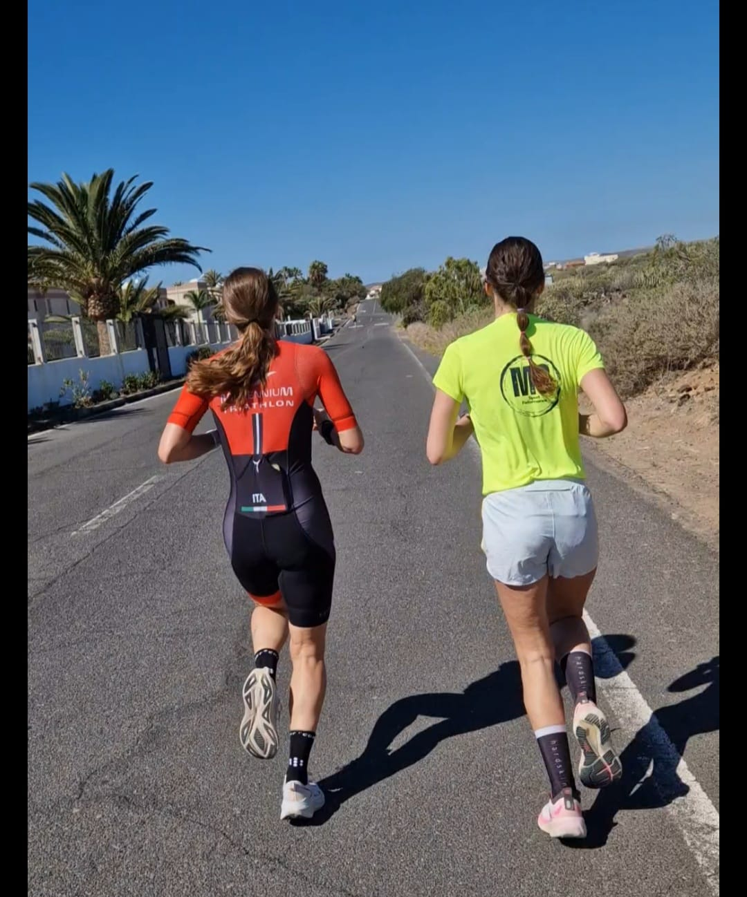
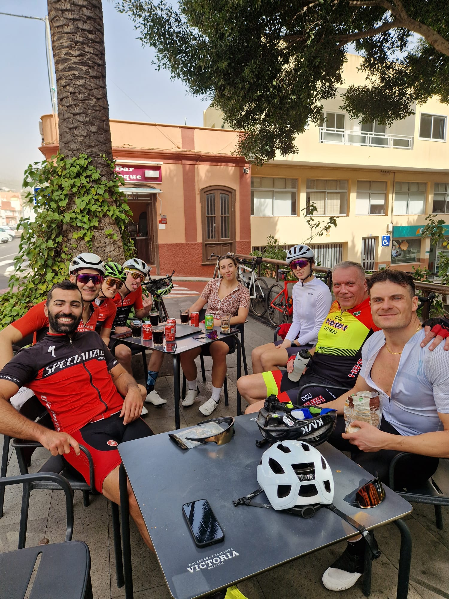
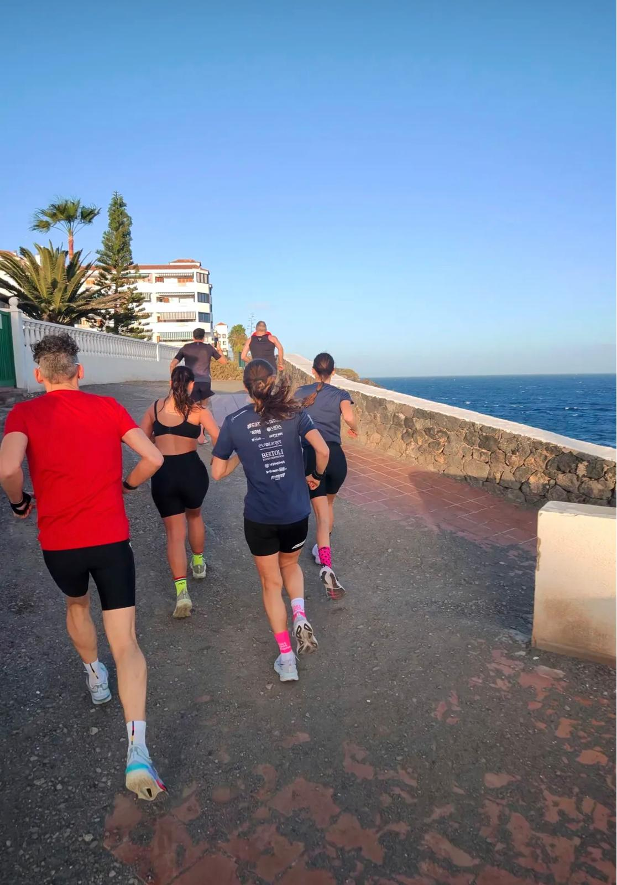
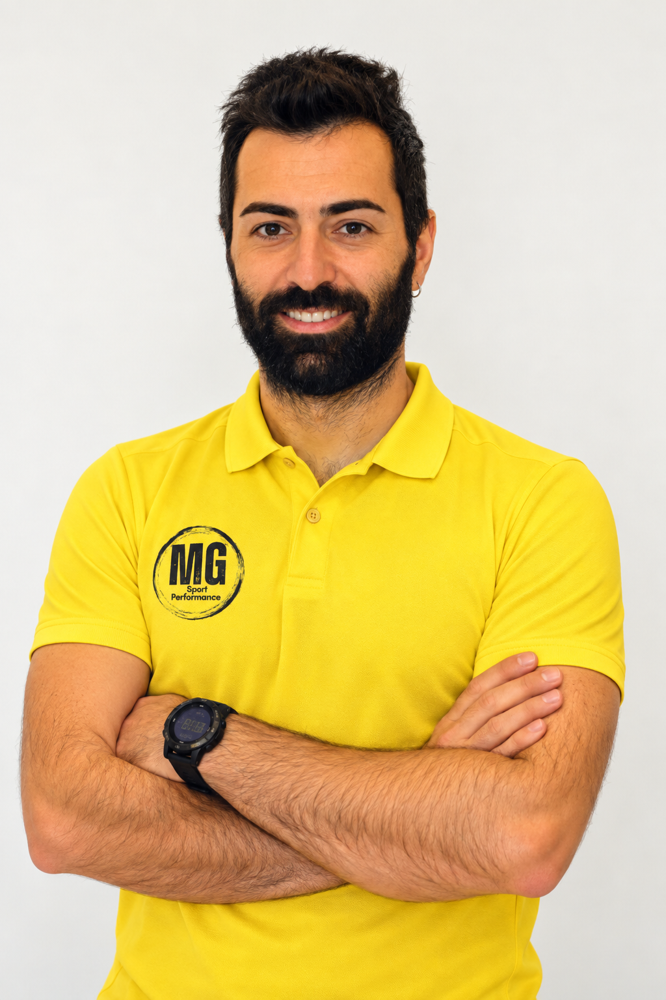

PERFORMANCE COACHING
"Lo sport non mente mai. Con un metodo scientifico basato sui dati, la dedizione sul campo e un piano calibrato sui tuoi ritmi di vita, nessun traguardo è irraggiungibile."
— Michael Guzzi, Head Coach MG Sport Performance • Chinesiologo L-22, Tecnico FITRI & FIN
Basato sulla Scienza,
Dimostrato sul Campo
L'allenamento per l'endurance non è improvvisazione né una serie di tabelle standard scaricate da internet. Ogni atleta possiede una fisiologia unica, ritmi lavorativi specifici e capacità di recupero differenti.
Come Chinesiologo laureato in Scienze Motorie L-22 (con tesi sperimentale sulla Valutazione e Gestione del Carico Interno ed Esterno negli atleti d'élite di triathlon) e Tecnico Federale FITRI e FIN, integro protocolli scientifici rigorosi con l'esperienza diretta maturata in oltre vent'anni di sport agonistico.
Utilizziamo il Test Incrementale del Lattato (MADER) per individuare con precisione millimetrica le tue soglie metaboliche (aerobica e anaerobica), definire le tue zone di lavoro (potenza in watt, passo al chilometro e frequenza cardiaca) e monitorare l'evoluzione della tua condizione senza lasciare nulla al caso.
Come Lavoriamo Insieme
Tre percorsi chiari, professionali e senza compromessi per atleti di triathlon, ciclismo e corsa a Bergamo e a distanza.
1. Valutazioni Funzionali
Test incrementale del lattato (MADER) svolto in presenza a Bergamo (indoor o outdoor, corsa, ciclismo su rulli o nuoto). Individuazione scientifica delle soglie LT1 e LT2, curve di lattato e calibrazione accurata delle zone di lavoro (watt, passo e frequenza cardiaca).
Dettagli Test MADER
2. Coaching 1:1
Programmazione individuale sartoriale su piattaforma professionale CoachPeaking. Analisi costante dei file di allenamento (Garmin, Polar, Wahoo), gestione integrata dei carichi e feedback continui per preparare gare Sprint, Olimpici, 70.3, Ironman o Granfondo.

3. Training Camp
Esperienze intensive e immersive per vivere lo sport da protagonista nei mesi invernali a Tenerife (Isole Canarie). Paesaggi vulcanici mozzafiato da esplorare in bici, accesso a pista di atletica e vasca olimpionica da 50 metri. Tecnica, volume e spirito di squadra.
Scopri il Camp alle CanarieTraining Camp alle Canarie
I Camp MG Sport Performance uniscono allenamenti tecnici di alto livello, percorsi scenografici e un clima positivo di condivisione e crescita sportiva a Tenerife.




Tenerife (Isole Canarie)
Il CAMP per eccellenza nei mesi invernali. Con temperature ideali e paesaggi vulcanici unici al mondo, Tenerife rappresenta il massimo per il ciclismo con salite iconiche e discese spettacolari. Disponibilità di noleggio bici d'alta gamma, accesso alla pista d'atletica e alla piscina olimpionica da 50 metri: il mix perfetto tra carico di qualità e divertimento in un ambiente informale.
Scopri i Dettagli del Camp alle CanarieVuoi iniziare ad allenarti con me,
ma non sai quale percorso scegliere?
Scrivimi raccontandomi la tua storia sportiva, il tuo livello attuale e la gara che sogni di completare. Valuteremo insieme il punto di partenza ideale: dal test del lattato al programma di coaching 1:1 su misura.
Parla con Michael
Head Coach MG Sport Performance • Chinesiologo L-22
Chi è Michael Guzzi?
Sono Michael Guzzi, da sempre un amante di tutti gli sport. Fin da piccolo ho praticato nuoto, per poi passare all’età di 9 anni alla pallanuoto, sport che mi ha formato e con il quale sono cresciuto, dedicandomi da giocatore per oltre 20 anni, disputando campionati giovanili di ottimo livello con diverse fasi finali nazionali e giocando in diverse categorie senior (Serie C, Serie B e Serie A2).
Nel 2015 decido di affacciarmi agli sport individuali e inizio a praticare Triathlon. Allo stesso tempo alleno le squadre giovanili di una società di pallanuoto bergamasca, scoprendo la mia vocazione per l'insegnamento e la preparazione atletica.
Volendo approfondire la preparazione sportiva con le più solide basi scientifiche, intraprendo gli studi universitari conseguendo la Laurea Triennale in Scienze Motorie L-22 (Chinesiologo di base) nel Luglio 2024, con tesi intitolata: “Valutazione e gestione del carico interno ed esterno di allenamento per atleti d'élite del triathlon”.
Preparazione Atletica a Bergamo e Online in Tutta Italia
Hai base a Bergamo o nella provincia orobica? Nel mio studio svolgo i test del lattato MADER in presenza e sessioni di valutazione sul campo. Grazie alla piattaforma CoachPeaking e alla sincronizzazione continua dei dati GPS e di potenza, seguo quotidianamente atleti in tutta Italia con la stessa meticolosità e vicinanza di un coach sul posto.
Valutazione indoor o su pista e percorsi dedicati.
Sincronizzazione automatica con Garmin, Polar e Wahoo.
Programmi strutturati per atleti di qualsiasi livello.
Inizia il Tuo Percorso
compila il modulo sottostante oppure utilizza i canali diretti WhatsApp e Instagram